VM as a Service in OpenShift Using Software Template Patterns
Introduction
Welcome to this lab, where you will learn about OpenShift Virtualization, how to build virtual machines in OpenShift, how to work with software templates in Red Hat Developer Hub, and how to create VM instances from Red Hat Developer Hub with your custom configurations.
This lab will use an existing, predefined template. You will simplify the user experience by updating the software template to support a new version of RHEL. During this lab, you will have the opportunity to explore different techniques for creating new templates or updating existing ones, and understand how to implement effective self-service patterns.
Build a New Virtual Machine in OpenShift
For this section, we’ll use an existing, predefined template and update the user experience by modifying the template.yaml file and the Helm charts.
You will create the VM template in RHDH. When users use the template, Developer Hub will leverage GitOps to build new virtual machines in OpenShift using OpenShift Virtualization. The following diagram describes the VM creation process using RHDH. As shown in this diagram, the OpenShift Virtualization operator is required to provision the VM in OpenShift (it has been preinstalled for you). The VM will run in the selected namespace.
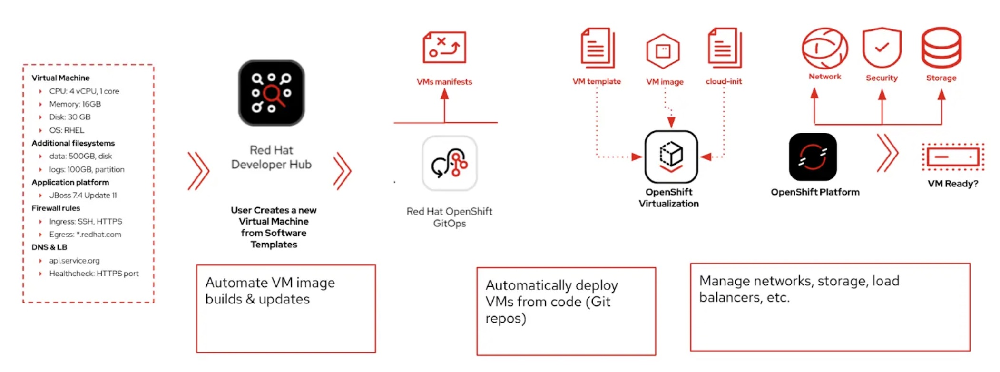
Explore the VM Template in GitLab
Access the {gitlab_url}/rhdh/rhads-enablement-l3-st-self-service/-/blob/main/rhel-vm-medium/[existing template directory in GitLab^] and log in with your credentials:
-
Log in to GitLab using your credentials:
-
Username: {gitlab_user}
-
Password: {gitlab_user_password}
-
Open the following files or folders to examine their contents:
-
template.yaml: This file defines the UI experience for the end user in RHDH (e.g. the fields and drop-downs and selectors to define the configuration of the VM in this case) and the programmatic steps to obtain software templates, create repositories, create GitOps objects, and more. -
skeleton/catalog-info.yaml: This file represents the object that is added to the catalog in Developer Hub when this template is used, including its name and links. All of the placeholders (e.g.${{values.component_id}}) are replaced with actual values user enters or are dynamically computed when the template is used. -
manifests/argocd: This folder contains the Argo CD application definitions and necessary secrets to read from the SCM. In this case, theargo-app-dev.yamlis the Argo CD Application pointing to the VM manifest folder. That have funny names because the values that the developer provides are used when the final file is created for the user in their git repository. -
manifests/helm/app: This folder contains a Helm chart that will be used to deploy the VM. OpenShift GitOps will use this Helm chart to deploy the VM in the selected namespace by combining user-supplied values with the files (e.g.vm.yaml) and creating the objects in OpenShift. WHen these files are updated in the user’s git repo, OpenShift GitOps will automatically deploy (sync) the changes to maintain the desired state, ensuring system stability.
Explore the VM Template in RHDH
-
Access the {rhdh_url}[Red Hat Developer Hub UI^] and log in with your credentials:
-
Username:
{openshift_admin_user} -
Password:
{openshift_admin_password}
-
-
Select the plus icon in the top navigation bar to Create a new component, or use the URL {rhdh_url}/create[Red Hat Developer Hub UI Create^]
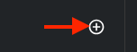
-
Click the Import an existing Git repository button.
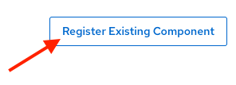
-
Enter the following URL in the Select URL field and click Analyze:
{gitlab_url}/rhdh/rhads-enablement-l3-st-self-service/-/blob/main/rhel-vm-medium/template.yaml-
Click the Import button
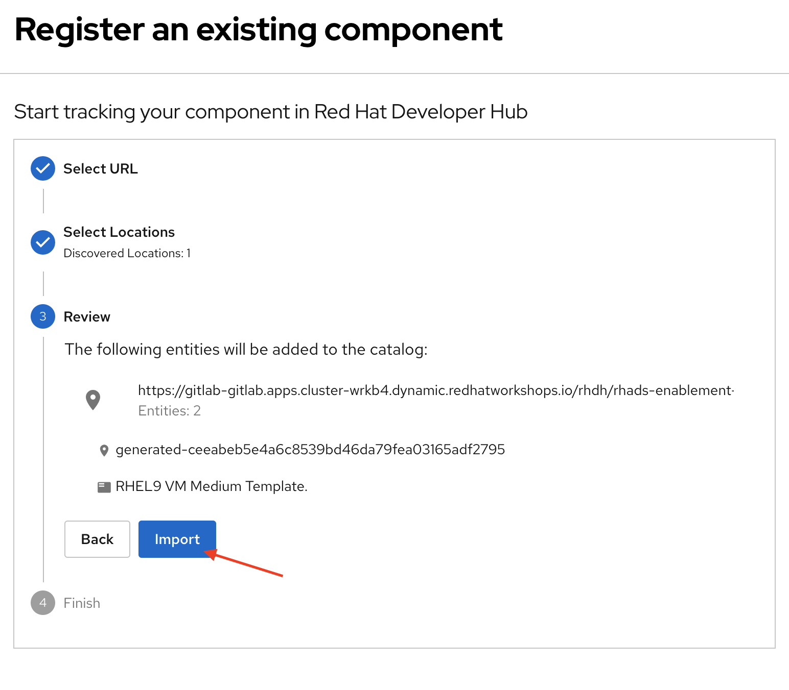
Congratulations! You now have a new software template in RHDH. End users can now self-provision virtual machines.
-
We’ll explore the end-user experience by accessing the Software Templates view.
-
Navigate to Catalog -→ Self-service
-
Look for the VM catalog
Let’s explore the current catalog:
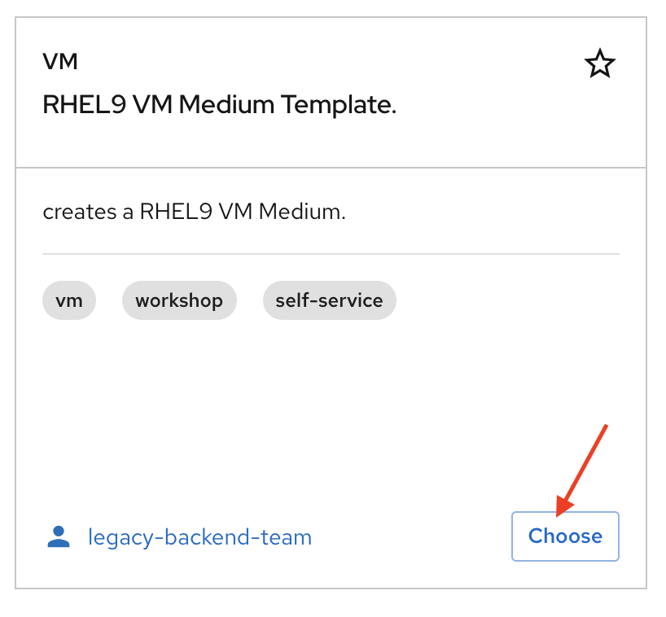
-
Click Choose
-
Review and fill out the information with dummy data until you reach the review screen, without creating the VM. DO NOT CLICK CREATE. You will do this later on after changing the template.
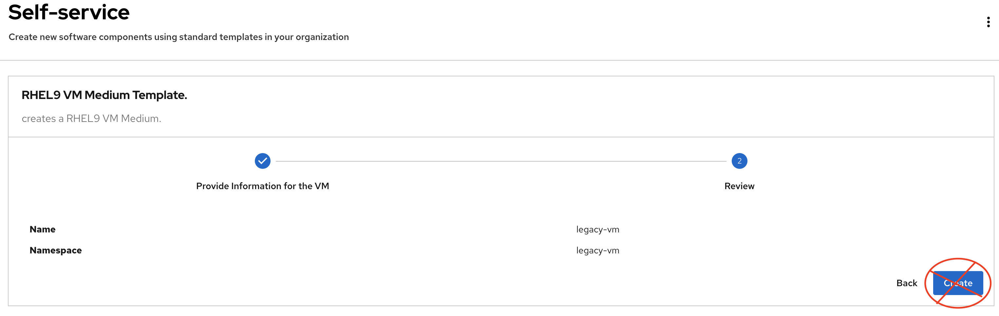
Scenario:
Imagine that you are part of the legacy apps team. Your responsibility is to create a new VM to host a legacy application. This VM will initially be used for experimentation, but there is a new version of RHEL that needs to be supported in addition to the current RHEL version 9. As a Platform Architect, what fields and files will you need to update?
We have a couple of options:
-
Option 1: Create a new template to support the new RHEL version. In this scenario, we would have 2 software templates (RHEL9, RHEL10). The disadvantage is that you would need to maintain two different software templates.
We need to explore how many changes must be included in this new version to make the decision. Is there something else we should update in the VM definition besides the image name?
-
Option 2: Update the current software template and make the necessary changes as generic as possible to support both the new RHEL version and previous versions. This creates an opportunity to make the template more generic without adding excessive complexity.
When to use a new software template?
Use a new software template when artifacts or components are very different, or when configurations are so dissimilar that they require extensive logic or variables to maintain them in the same configuration. The main goal is to keep it as simple as possible to reduce maintenance overhead.
The solution:
We’ll choose the second option: update the current software template to support different RHEL versions. This approach will also help reduce maintenance when new versions need to be supported.
Explore VM Creation with OpenShift Virtualization
Let’s explore what types of VMs you can create in OpenShift. Imagine that you are new to templating VMs in OpenShift - what’s the best approach to deploy a new VM instance? Let’s use OpenShift Virtualization to explore the different types and solutions available.
-
Log in to the {openshift_console_url}[OpenShift Web Console^]
-
Use your administrator credentials:
-
Username: {openshift_admin_user}
-
Password: {openshift_admin_password}
-
-
-
Click on the Virtualization item on the left sidebar, then click on Overview.
You will see the welcome page.
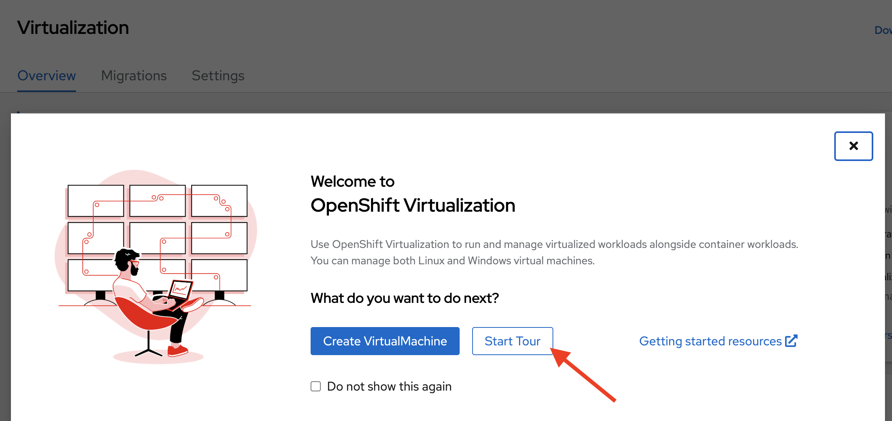
You can optionally familiarize yourself with OpenShift Virtualization using the Start Tour. Click on Virtual Tour and follow the steps (or just click the x to close if your’re already familiar with it).
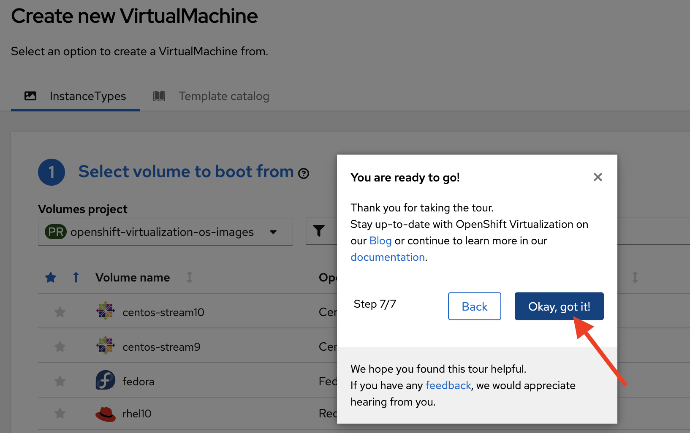
-
Let’s create a VM in OpenShift
-
On the Create new VirtualMachine screen, you will see all available VM configurations listed. Remember, you can also customize these to your needs.
-
Select the volume rhel10
-
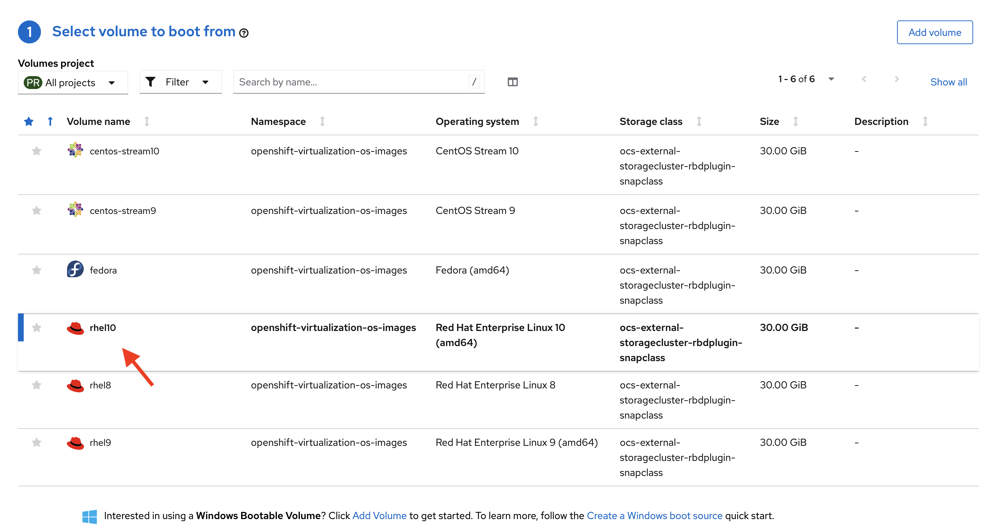
-
Scroll down to explore the available Instance Types
-
Select General Purpose U series and medium 1 CPUs, 4 GiB memory
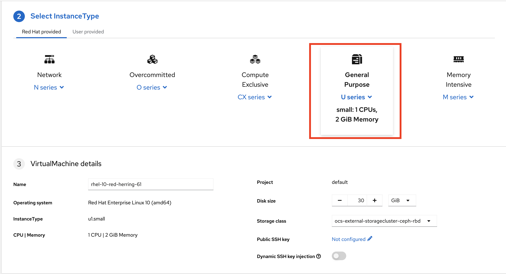
-
Leave the rest of the defaults as-is.
Note: Do not create the VM. You will create a VM using this configuration through RHDH.
-
Click the View YAML & CLI button to view what the VM manifest would look like if you created it.
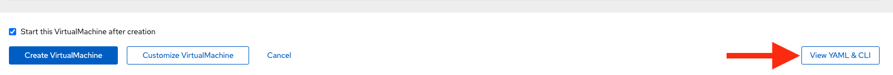
-
From that view, look for the RHEL10 related values:
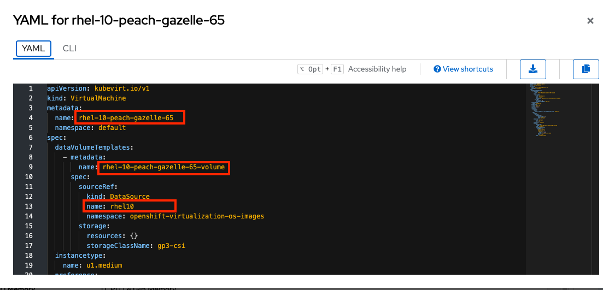
|
You may see other fields such as the VM’s name or the |
Our current template is not supporting the new RHEL version (it’s hard-coded for RHEL 9). In the next steps we’ll update the template to support the new RHEL version by adding parameters for the RHEL version within the vm.yaml file and add necessary UI updates to allow the user to select the RHEL version from the RHDH "Create" flow.
Implement Changes in Software Templates
-
Return to RHDH. You will compare the new values with the current VM instance file to identify what needs to be updated.
-
Click Catalog in the RHDH menu
-
Next, select the filters: Kind:Template and Tags: self-service as shown in the following picture:
-
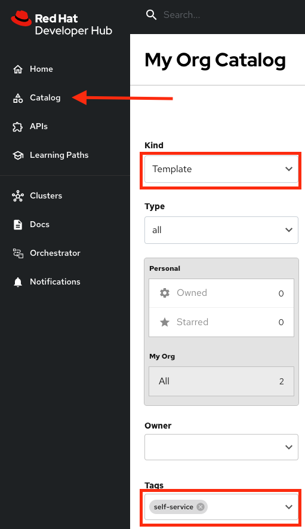
-
Select the RHEL9 VM Medium Template
-
The current template needs to be deleted since we’ll be creating a new template with a new name.
-
-
Click the three dots under Owner, then click Unregister entity
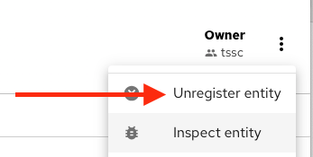
-
Confirm the action.
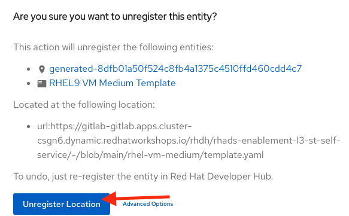
Now we’ll update several files in the template to support the new RHEL version. These are the files you’ll need to update:
-
vm.yaml- The VM manifest file that will be used to create the VM. -
values.yaml- The file that will be used to pass the RHEL version to the Helm chart when deployed by OpenShift GitOps. -
template.yaml- The template file that will define the UI experience for the end user.
Let’s start with the vm.yaml file.
-
{gitlab_url}/rhdh/rhads-enablement-l3-st-self-service/-/blob/main/rhel-vm-medium/manifests/helm/app/templates/vm.yaml[Open the
vm.yamlfile in GitLab^].-
Review the VM definition and compare it with the one provided by OpenShift Virtualization
-
Remember the places where you saw rhel.10? We need to replace it with a variable that will allow the user to choose 9 or 10.
Edit the file by choosing Edit → Edit Single File:
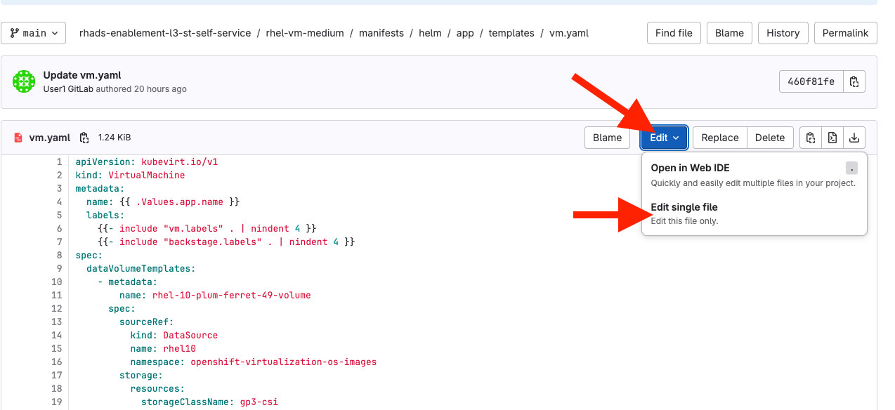
Next, find the two comments with UPDATE to parameterize the RHEL version - we need to replace the hardcoded values with variables:
-
Replace
rhel9withrhel{{ .Values.app.rhel.version }} -
Replace
rhel.9withrhel.{{ .Values.app.rhel.version }}
It should look like:
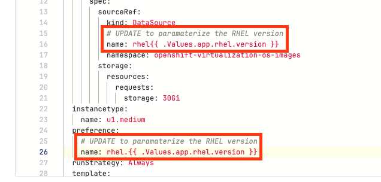
This will enable the user to choose the RHEL version when they create the VM, and the chosen values will be used in the VM manifest that you just edited to create the VM.
Save your changes by scrolling down and clicking the Commit Changes button.
If you are unsure you did it correctly, you can compare your file with the solution file provided here:
Note: Don’t forget to commit your changes.
-
Next, {gitlab_url}/rhdh/rhads-enablement-l3-st-self-service/-/blob/main/rhel-vm-medium/manifests/helm/app/values.yaml[Open the
values.yamlfile in GitLab^].
You need to include the RHEL version as a variable. This value must match the value you added to the vm.yaml file.
Under the app key, add a new key called rhel and under that, add a new key called version and set it to ${{values.rhel_version}} (the "tree" of rhel→version matches what you added to the vm.yaml file, and the name values.rhel_version matches what you’re about to add to the template.yaml file).
It should look like:
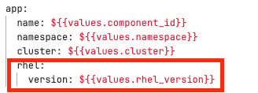
If you are unsure you did it correctly, you can compare your file with the values.yaml solution file:
Note: Don’t forget to commit your changes.
Make Updates in the VM Template in GitLab
Finally, let’s update the template.yaml make edits to these areas to parameterize the RHEL version:
-
First, {gitlab_url}/rhdh/rhads-enablement-l3-st-self-service/-/blob/main/rhel-vm-medium/template.yaml[open the
template.yamlfile in GitLab^] and select Edit→Edit Single File to edit the file. -
Remove the
9from the name, title, and description since our template will support both RHEL 9 and RHEL 10 (and maybe others in the future):
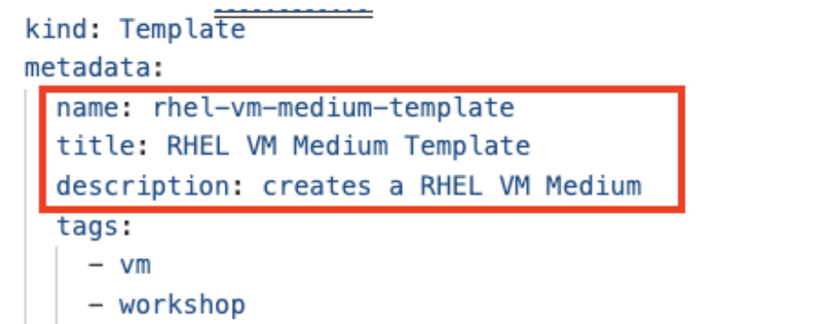
-
Add a new required parameter under the comment
# UPDATE: Add other required parameters herecalledrhel_version:
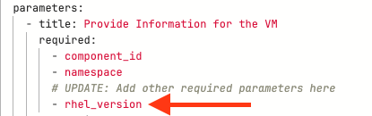
-
Below the
# UPDATE: Add new properties herecomment, add this snippet that defines the parameter’s type as an enumerated type (which renders as a drop-down).
rhel_version:
title: Select the RHEL version
type: string
description: The RHEL version for the VM
default: 10
enum:
- '9'
- '10'
enumNames:
- 'RHEL9'
- 'RHEL10'Be sure the indentation matches the rest of the file as shown:
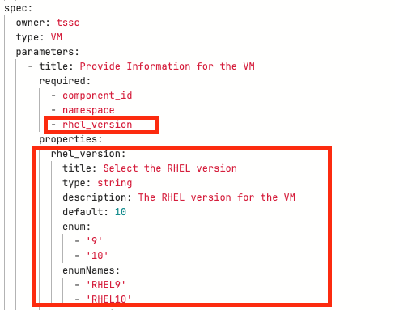
Next, scroll down to the templateSource step. We need to include the new variable in the steps. If we do not, the Helm charts will not receive the data.
Add the new variable in the templateSource step at the # UPDATE: Add new source values here comment as shown:
rhel_version: ${{parameters.rhel_version}}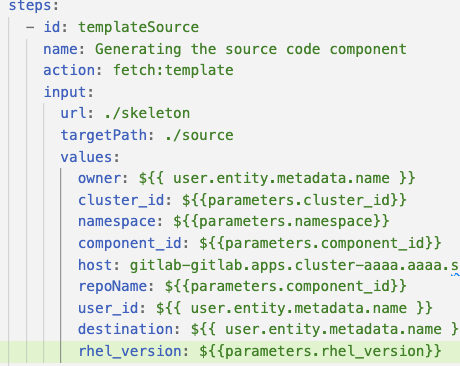
-
Add the new variable in the templateGitops step at the
# UPDATE: Add new Gitops values herecomment as shown:
Add the new variable in the templateSource step at the # UPDATE: Add new source values here comment as shown:
rhel_version: ${{parameters.rhel_version}}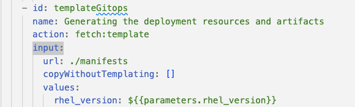
-
Take time to review your file against the template.yaml solution file
-
Scroll down and select Commit Changes to save your changes.
Register the new template
Back in {rhdh_url}[Developer Hub^], select the plus icon in the top navigation bar to access the Create option.
-
Click the Import an existing Git repository button.
-
Enter the following URL in the Select URL field and click Analyze:
{gitlab_url}/rhdh/rhads-enablement-l3-st-self-service/-/blob/main/rhel-vm-medium/template.yaml-
Click the Import button to import the template with the changes you’ve made.
Test Your Changes: Explore the User Experience as a Developer
Let’s create an instance of the new VM defined in the software templates.
-
From the catalog, select Self-service and find the RHEL VM Medium Template
-
Click Choose
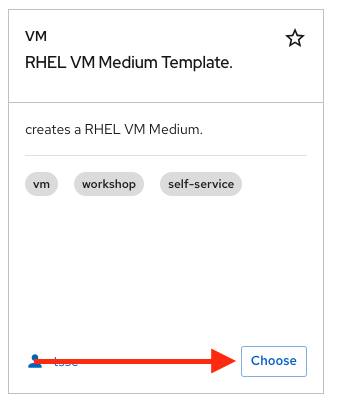
-
You should see a screen like this one:
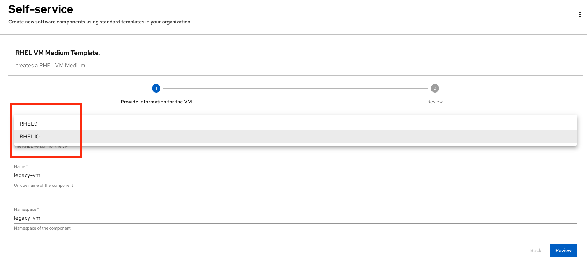
-
Select the new version using the drop-down: RHEL10
-
Leave the rest of the defaults as-is, click Review, and then click Create to finish the template flow.
-
Once the VM is created, click Open Component in Catalog to view the newly created VM inside Developer Hub:
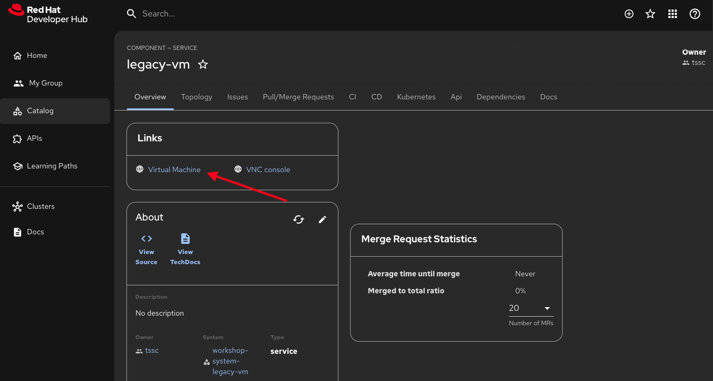
-
Click Virtual Machine to view the VM inside OpenShift Virtualization. It may take a few moments for the VM to finish booting, but you’ll see the status:
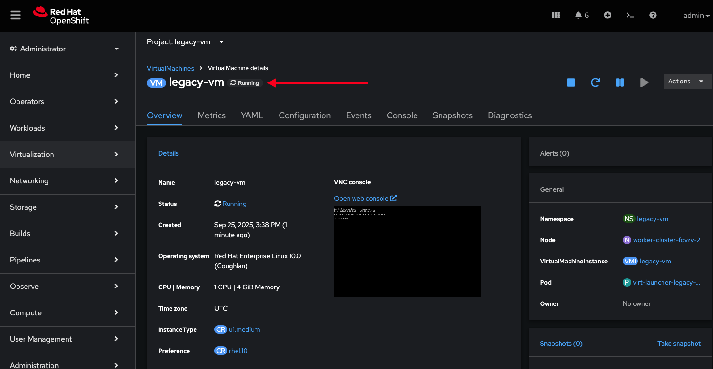
-
Feel free to explore this VM - logging in via the VNC console, or other activities.
-
Optionally watch the following demo - your experience should be very similar.
-
If you need to re-login to the OpenShift Cluster: {openshift_console_url}[Web Console^]
-
Use your user credentials:
-
Username: {openshift_admin_user}
-
Password: {openshift_admin_password}
-
-